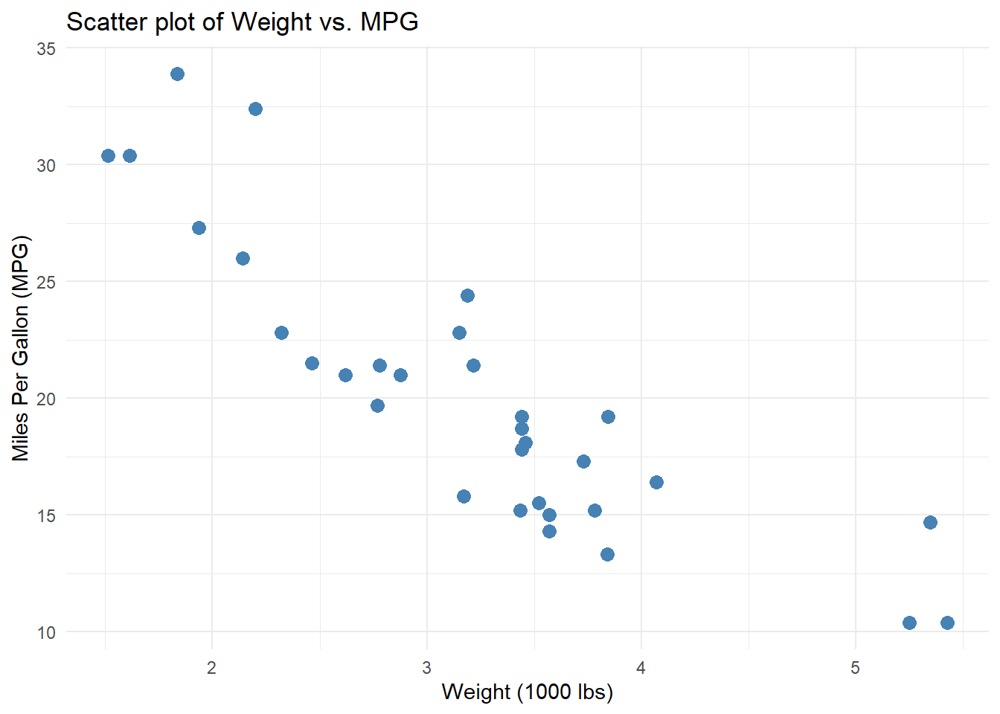
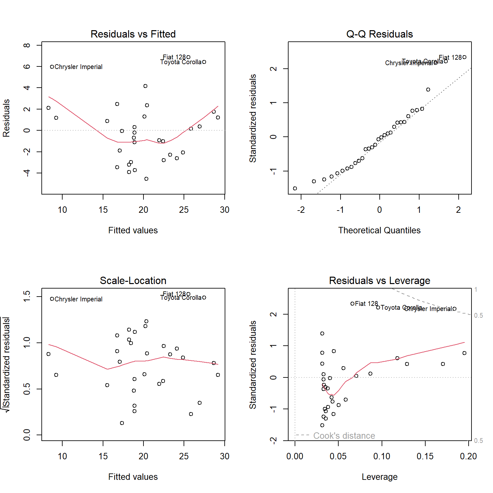
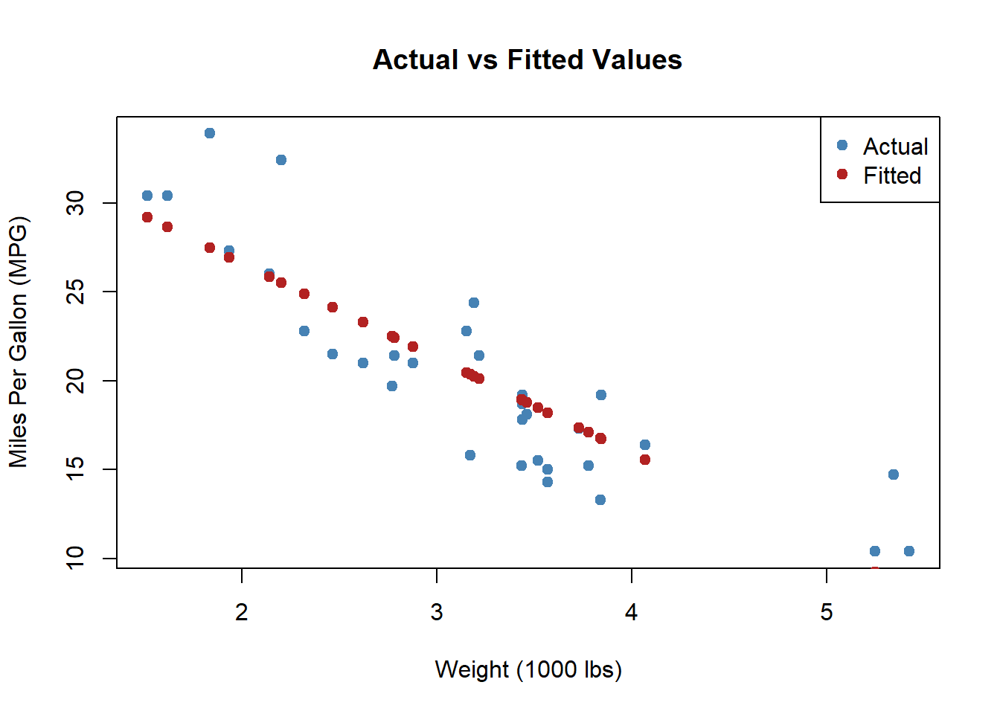
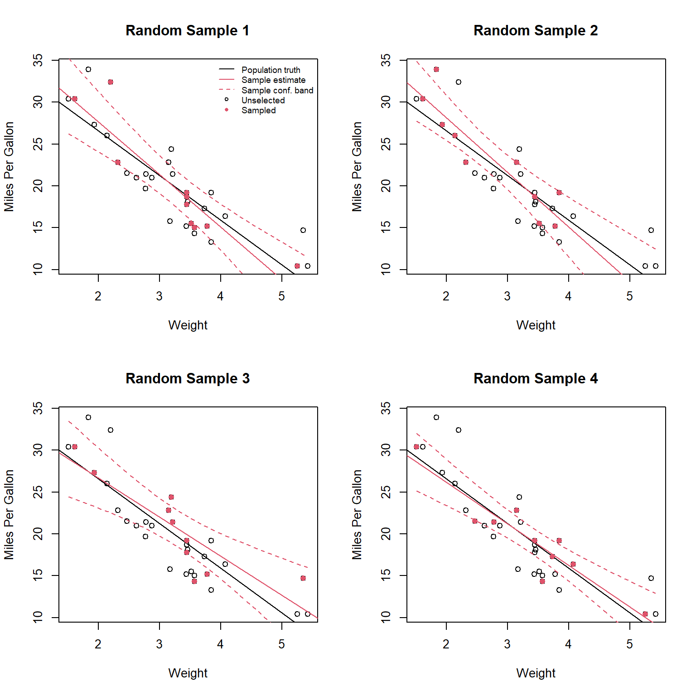

In this practical lab, we will perform a comprehensive Linear Regression Analysis. We’ll start with Exploratory Data Analysis, fit simple and multiple regression models, verify the OLS assumptions, and visualize our results.
1. Setting up the environment
We begin by loading the necessary libraries and our dataset. We’ll use the built-in mtcars dataset for the simple regression, and generate a synthetic dataset later for multiple regression.
# Load necessary libraries for data manipulation, visualization, and diagnostic testinglibrary(datasets)library(ggplot2) library(lmtest) # Required for assumption verification tests (bptest, dwtest, resettest)library(car) # Required for multicollinearity test (vif)# Load the built-in mtcars dataset and preview the first few rowsdata(mtcars) head(mtcars)
Before fitting models, we perform an exploratory analysis to understand the relationships between our variables of interest.
# Generate summary statistics for the datasetsummary(mtcars)
mpg cyl disp hp
Min. :10.40 Min. :4.000 Min. : 71.1 Min. : 52.0
1st Qu.:15.43 1st Qu.:4.000 1st Qu.:120.8 1st Qu.: 96.5
Median :19.20 Median :6.000 Median :196.3 Median :123.0
Mean :20.09 Mean :6.188 Mean :230.7 Mean :146.7
3rd Qu.:22.80 3rd Qu.:8.000 3rd Qu.:326.0 3rd Qu.:180.0
Max. :33.90 Max. :8.000 Max. :472.0 Max. :335.0
drat wt qsec vs
Min. :2.760 Min. :1.513 Min. :14.50 Min. :0.0000
1st Qu.:3.080 1st Qu.:2.581 1st Qu.:16.89 1st Qu.:0.0000
Median :3.695 Median :3.325 Median :17.71 Median :0.0000
Mean :3.597 Mean :3.217 Mean :17.85 Mean :0.4375
3rd Qu.:3.920 3rd Qu.:3.610 3rd Qu.:18.90 3rd Qu.:1.0000
Max. :4.930 Max. :5.424 Max. :22.90 Max. :1.0000
am gear carb
Min. :0.0000 Min. :3.000 Min. :1.000
1st Qu.:0.0000 1st Qu.:3.000 1st Qu.:2.000
Median :0.0000 Median :4.000 Median :2.000
Mean :0.4062 Mean :3.688 Mean :2.812
3rd Qu.:1.0000 3rd Qu.:4.000 3rd Qu.:4.000
Max. :1.0000 Max. :5.000 Max. :8.000
# Create a scatter plot of Weight vs. MPG to visually inspect their relationshipggplot(mtcars, aes(x = wt, y = mpg)) +geom_point(color ="steelblue", size =3) +labs(title ="Scatter plot of Weight vs. MPG", x ="Weight (1000 lbs)", y ="Miles Per Gallon (MPG)") +theme_minimal()

# Calculate the Pearson correlation coefficient between weight and MPGcor(mtcars$wt, mtcars$mpg)
[1] -0.8676594
3. Simple Linear Regression
We fit a linear regression model to predict mpg (Y) based on car weight wt (X): \[Y = \beta_0 + \beta_1 X + \epsilon\]
# Fit the simple linear regression model modelo <-lm(mpg ~ wt, data = mtcars) # Display the summary of the modelsummary(modelo)
Call:
lm(formula = mpg ~ wt, data = mtcars)
Residuals:
Min 1Q Median 3Q Max
-4.5432 -2.3647 -0.1252 1.4096 6.8727
Coefficients:
Estimate Std. Error t value Pr(>|t|)
(Intercept) 37.2851 1.8776 19.858 < 2e-16 ***
wt -5.3445 0.5591 -9.559 1.29e-10 ***
---
Signif. codes: 0 '***' 0.001 '**' 0.01 '*' 0.05 '.' 0.1 ' ' 1
Residual standard error: 3.046 on 30 degrees of freedom
Multiple R-squared: 0.7528, Adjusted R-squared: 0.7446
F-statistic: 91.38 on 1 and 30 DF, p-value: 1.294e-10
Interpretation: In the summary output, the intercept is \(\beta_0\) and the coefficient under the wt column is \(\beta_1\) (the slope). The slope is estimated to be -5.34, meaning that for every additional 1000 lbs of weight, the car loses about 5.34 miles per gallon.
3.1 Visual Diagnostic Plots
# Generate standard visual diagnostic plots # 1. Residuals vs Fitted: Checks for non-linear patterns.# 2. Normal Q-Q: Checks if residuals are normally distributed.# 3. Scale-Location: Checks the assumption of constant variance (homoscedasticity).# 4. Residuals vs Leverage: Identifies influential observations/outliers.par(mfrow =c(2, 2))plot(modelo)

3.2 Formal Verification of OLS Assumptions
Beyond visual diagnostics, we use formal statistical tests to verify the core assumptions.
# 1. Normality of Residuals (Shapiro-Wilk)shapiro.test(residuals(modelo))
Shapiro-Wilk normality test
data: residuals(modelo)
W = 0.94508, p-value = 0.1044
We can also use linear models to test differences across categories (which is mathematically equivalent to an independent t-test).
# Fit a model predicting MPG based on transmission type (am)modelo3 <-lm(mpg ~ am, data = mtcars) summary(modelo3)
Call:
lm(formula = mpg ~ am, data = mtcars)
Residuals:
Min 1Q Median 3Q Max
-9.3923 -3.0923 -0.2974 3.2439 9.5077
Coefficients:
Estimate Std. Error t value Pr(>|t|)
(Intercept) 17.147 1.125 15.247 1.13e-15 ***
am 7.245 1.764 4.106 0.000285 ***
---
Signif. codes: 0 '***' 0.001 '**' 0.01 '*' 0.05 '.' 0.1 ' ' 1
Residual standard error: 4.902 on 30 degrees of freedom
Multiple R-squared: 0.3598, Adjusted R-squared: 0.3385
F-statistic: 16.86 on 1 and 30 DF, p-value: 0.000285
# Perform a t-test to formally compare MPG across the two transmission typest.test(mpg ~ am, data = mtcars)
Welch Two Sample t-test
data: mpg by am
t = -3.7671, df = 18.332, p-value = 0.001374
alternative hypothesis: true difference in means between group 0 and group 1 is not equal to 0
95 percent confidence interval:
-11.280194 -3.209684
sample estimates:
mean in group 0 mean in group 1
17.14737 24.39231
5. Regression and Uncertainty
Let’s visualize the fit of our model and understand the variance breakdown (SSR, ESS, TSS).
par(mfrow =c(1, 1))plot(mtcars$wt, mtcars$mpg, main ="Actual vs Fitted Values",xlab ="Weight (1000 lbs)", ylab ="Miles Per Gallon (MPG)", pch =19, col ="steelblue")points(mtcars$wt, fitted(modelo), col ="firebrick", pch =19)legend("topright", legend =c("Actual", "Fitted"), col =c("steelblue", "firebrick"), pch =19)

# Calculate Sum of Squared Residuals (SSR)SRC <-sum((fitted(modelo) - mtcars$mpg)^2)# Calculate Explained Sum of Squares (ESS)SEC <-sum((fitted(modelo) -mean(mtcars$mpg))^2)# Calculate Total Sum of Squares (TSS)STC <- SRC + SEC# Calculate R-squared manuallyR2 <- SEC / STCcat("Manually calculated R-squared:", R2, "\n")
Manually calculated R-squared: 0.7528328
5.1 Simulating Sampling Uncertainty
Let’s consider 4 random samples of 10 cars to see how the regression line and confidence bands fluctuate around the true population line.
set.seed(123)par(mfrow =c(2, 2)) # Set up a 2x2 grid for the 4 plotsfor(i in1:4){# Plot the full populationplot(mpg ~ wt, data = mtcars,xlab ="Weight", ylab ="Miles Per Gallon",main =paste("Random Sample", i),ylim =c(min(mtcars$mpg), max(mtcars$mpg) +0.3))# Add the true population regression lineabline(modelo)if(i ==1){legend("topright", pch =c(NA, NA, NA, 1, 16), lty =c(1, 1, 2, NA, NA),col =c(1, 2, 2, 1, 2),legend =c("Population truth", "Sample estimate","Sample conf. band", "Unselected", "Sampled"),cex =0.7, bty ="n") }# Randomly select 10 cars selected.cars <-sample(1:nrow(mtcars), 10)# Highlight the sampled points in redpoints(mtcars[selected.cars, "wt"], mtcars[selected.cars, "mpg"], pch =16, col =2)# Fit a regression line using only the sample model.sel <-lm(mpg ~ wt, data = mtcars[selected.cars, ])abline(model.sel, col =2)# Make a confidence band ww <-qt(0.975, 10-2) plot.x <-data.frame(wt =seq(1.513, 5.424, 0.1)) plot.fit <-predict(model.sel, plot.x, level =0.95, interval ="confidence", se.fit =TRUE)lines(plot.x$wt, plot.fit$fit[, 1] + ww * plot.fit$se.fit, col =2, lty =2)lines(plot.x$wt, plot.fit$fit[, 1] - ww * plot.fit$se.fit, col =2, lty =2)}

6. Multiple Regression
We will generate a synthetic dataset for public policies to model economic_output.
# Generate a synthetic dataset for public policiesset.seed(123)n <-1000public_policies_data <-data.frame(region =paste("Region", 1:n),education_expenditure =runif(n, 5000, 15000), # Education spendinghealthcare_expenditure =runif(n, 2000, 10000), # Healthcare spendingpoverty_rate =runif(n, 5, 30) # Poverty rate (%))# Calculate economic output based on true coefficients and random noisepublic_policies_data$economic_output <-10000+0.5* public_policies_data$education_expenditure +0.3* public_policies_data$healthcare_expenditure -200* public_policies_data$poverty_rate +rnorm(n, 0, 5000) # Fit a multiple regression modelmodelo_mult <-lm(economic_output ~ education_expenditure + healthcare_expenditure + poverty_rate, data = public_policies_data)# Summarize the multiple regression modelsummary(modelo_mult)
Call:
lm(formula = economic_output ~ education_expenditure + healthcare_expenditure +
poverty_rate, data = public_policies_data)
Residuals:
Min 1Q Median 3Q Max
-15281.2 -3231.9 -55.9 3327.0 16267.7
Coefficients:
Estimate Std. Error t value Pr(>|t|)
(Intercept) 1.039e+04 7.797e+02 13.330 < 2e-16 ***
education_expenditure 4.207e-01 5.444e-02 7.727 2.67e-14 ***
healthcare_expenditure 3.085e-01 6.839e-02 4.511 7.23e-06 ***
poverty_rate -1.809e+02 2.141e+01 -8.448 < 2e-16 ***
---
Signif. codes: 0 '***' 0.001 '**' 0.01 '*' 0.05 '.' 0.1 ' ' 1
Residual standard error: 4925 on 996 degrees of freedom
Multiple R-squared: 0.1197, Adjusted R-squared: 0.117
F-statistic: 45.13 on 3 and 996 DF, p-value: < 2.2e-16
6.1 Diagnostics for Multiple Regression
With multiple predictors, we also need to check for multicollinearity.
# 1. Absence of Multicollinearity (VIF)# VIF values > 5 or 10 indicate problematic multicollinearity.vif(modelo_mult)